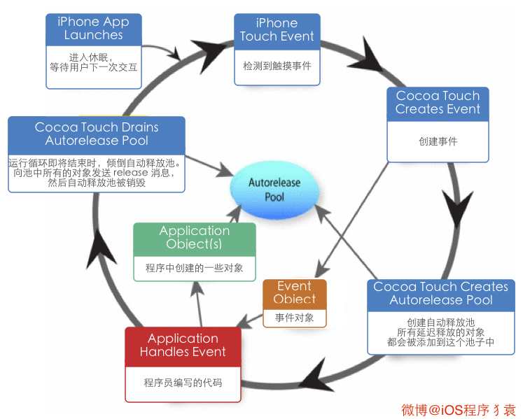
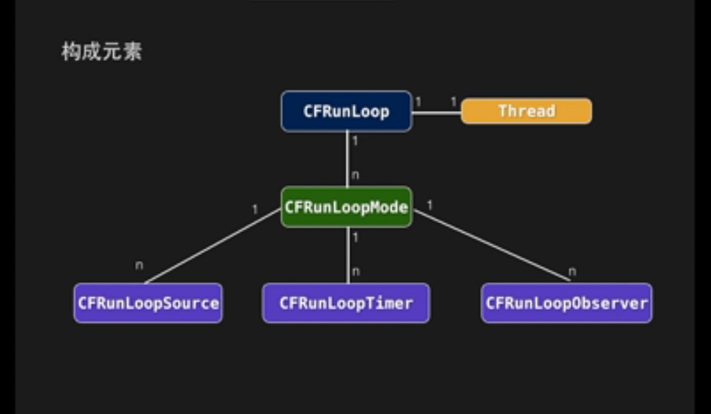

Runloop
总阅读次
转载来源： https://www.zybuluo.com/qidiandasheng/note/346387
Runloop
什么是Runloop
简单点说就是一个do while的运行循环。主要的作用就是保持程序的持续运行。比如主线程的runloop从程序打开就一直在运行。一个线程对应着一个runloop。RunLoop在第一次获取时创建，在线程结束时销毁。

一些基本概念
为什么使用Runloop
- 使程序一直运行并接受用户输入
- 决定程序在何时应该处理哪些Event
- 调节解耦（Message Queue）
也就是主调方把消息放入一个队列，被调方只要去这个队列里取就行了。 - 节省CPU时间
Runloop在没有事的时候会进入一个休眠状态，不会让CPU一直在运行程序。
CFRunLoopSource
Source是RunLoop的数据源抽象类,类似IOS中的protocol
RunLoop定义两个Version的SourceSource0:处理App内部事件,App自己负责管理(触发),如UIEvent,CFSocket
Source1:由RunLoop和内核管理,Mach port驱动 如CFMach、CFMessageCFRunLoopObserver
向内部报告RunLoop当前状态的更改 CAAnimationRunLoopObserver 与 Autorelease Pool
UIKit通过RunLoopObserver在RunLoop两次Sleep间对AutoreleasePool进行pop和push,将这次Loop中产生的Autorelease对象释放。RunLoop的挂起与唤醒
制定用于唤醒的mach_port端口
调用mach_msg监听唤醒端口,被唤醒前,系统内核将这个线程挂起,停留在mach_msg_trap
由另外一个线程(或另一个进程中的某个线程)向内核发送这个端口的msg后,trap状态被唤醒,RunLoop继续开始干活
CFRunLoopMode
RunLoop在同一时段只能且必须在一种特定Mode下Run
更换Mode时, 需要暂停当前的Loop,然后重启新的Loop1
2
3
4NSDefalutRunLoopMode 默认状态.空闲状态
UITrackingRunLoopMode 滑动ScrollView
UIInitializationRunLoopMode 私有,App启动时
NSRunLoopCommonModes 默认包括上面第一和第二UITrackingRunLoopMode 与 NSTimer
默认情况下NSTimer被加入NSDefalutRunLoopMode
如果不想NSTimer受到组件或者动画影响 添加到NSRunLoopCommonModesRunLoopMode在滑动时切换
NSDefaultRunLoopMode->UITrackingRunLoopMode->NSDefalutRunLoopMode
Runloop跟GCD的关系
GCD中dispatch到main queue的block被分发到main Runloop中执行。dispatch_after同理。
Runloop内部结构
NSRunloop其实是对CFRunloop的一层封装。CFRunloop是开源的，开源地址CF Source。

下面的 Source/Timer/Observer 被统称为 mode item，一个 item 可以被同时加入多个 mode。但一个 item 被重复加入同一个 mode 时是不会有效果的。如果一个 mode 中一个 item 都没有，则 RunLoop 会直接退出，不进入循环。
CFRunLoopSourceRef
CFRunLoopSourceRef 是事件产生的地方。Source有两个版本：Source0 和 Source1。
Source0 只包含了一个回调（函数指针），它并不能主动触发事件。使用时，你需要先调用 CFRunLoopSourceSignal(source)，将这个 Source 标记为待处理，然后手动调用 CFRunLoopWakeUp(runloop) 来唤醒 RunLoop，让其处理这个事件。
Source1 包含了一个 mach_port 和一个回调（函数指针），被用于通过内核和其他线程相互发送消息。这种 Source 能主动唤醒 RunLoop 的线程，其原理在下面会讲到。
CFRunLoopTimerRef
CFRunLoopTimerRef是基于时间的触发器，它和 NSTimer 是toll-free bridged 的，可以混用。其包含一个时间长度和一个回调（函数指针）。当其加入到 RunLoop 时，RunLoop会注册对应的时间点，当时间点到时，RunLoop会被唤醒以执行那个回调。
CFRunLoopObserverRef
CFRunLoopObserverRef 是观察者，每个 Observer 都包含了一个回调（函数指针），当 RunLoop 的状态发生变化时，观察者就能通过回调接受到这个变化。可以观测的时间点有以下几个：
1 | typedef CF_OPTIONS(CFOptionFlags, CFRunLoopActivity) { |
主线程几乎所有的函数都是从以下几个函数调起，这些很长的函数我们能在程序运行时打断点在左侧的调用栈中看到：
1 | { |
Runloop的实际使用
Runloop常用的场景有以下几种：NSTimer，PerformSelector，常驻线程。
常驻线程
常驻线程的应用场景:经常在后台进行耗时操作,如:监控联网状态，扫描沙盒等 不希望线程处理完事件就销毁，保持常驻状态比如AFNetworking 2.0等。
Runloop常驻线程等待block回调成功1
2
3
4
5
6
7
8
9
10
11
12
13
14
15
16
17__block NSString* result = nil;
__block BOOL isExecuted = NO;
[(WKWebView*)self.realWebView evaluateJavaScript:javaScriptString completionHandler:^(id obj, NSError* error) {
result = obj;
isExecuted = YES;
}];
while (isExecuted == NO) {
[[NSRunLoop currentRunLoop] runMode:NSDefaultRunLoopMode beforeDate:[NSDate distantFuture]];
}
return result;
__block NSString* result = nil;
[(WKWebView*)self.realWebView evaluateJavaScript:javaScriptString completionHandler:^(id obj, NSError* error) {
result = obj;
CFRunLoopStop(CFRunLoopGetMain());
}];
CFRunLoopRun();
return result;
保持子线程线程常驻例子
1.设置成全局的，如果是线程对象是局部的就会死掉
@property (nonatomic,strong) NSThread *thread;
2.初始化线程并启动
self.thread = [[NSThread alloc]initWithTarget:self selector:@selector(run) object:nil];
[self.thread start];
3.启动RunLoop，子线程的RunLoop默认是停止的
在线程的入口处我们需要创建一个Autorelease Pool，当线程退出的时候释放这个Autorelease Pool。这样在线程中创建的autorelease对象就可以在线程结束的时候释放，避免过多的延迟释放造成程序占用过多的内存。如果是一个长寿命的线程的话，应该创建更多的Autorelease Pool来达到这个目的。
1 | //只要往RunLoop中添加了 timer、source或者observer就会继续执行，一个Run Loop通常必须包含一个输入源或者定时器来监听事件，如果一个都没有，Run Loop启动后立即退出。 |
4.利用常驻线程处理事情
这样thread这个线程就会一直存在，当需要使用此线程处理一些事情的时候就这么调用
1 | [self performSelector:@selector(action) onThread:self.thread withObject:nil waitUntilDone:NO ]; |
NSTimer
NSTimer也是在面试中提及Runloop的时候会被问到的问题。
详情可以看我的另一篇文章：NSTimer需要注意的地方
PerformSelecter
当调用 NSObject 的 performSelecter:afterDelay: 后，实际上其内部会创建一个 Timer 并添加到当前线程的 RunLoop 中。所以如果当前线程没有 RunLoop，则这个方法会失效。
Table View延迟加载图片
这个问题是有的TableView有大量图片（比如头像）加载，在滑动的时候，请求网络，下载完图片之后设置的时候会卡，往常的解决方案一般是添加delegate之类的，检测什么时候滑动结束什么时候去设置图片
在知道RunLoop之后，可以采用下面的方案，在DefaultMode去做，这样滑动的时候就不会调用设置图片方法.
1 | UIImage *downLoadImage = ...; |
让Crash的APP回光返照
我这里有个Demo就是写Signal信号崩溃时，使用手动重启Runloop不使程序崩溃，并弹出Alert。DSSignalHandlerDemo。
主要代码就是以下这段：
1 | CFRunLoopRef runLoop = CFRunLoopGetCurrent(); |
Async Test Case
原来在写Test Case 的时候不支持异步。然后这里有个方法就是使用runloop的CFRunLoopObserver来监听runloop快要sleep的时候，去验证这个异步。
如何查看Runloop的调试栈信息
你直接打开xcode，运行一下程序，然后打个断点暂停一下，我们就能看到从main函数后面马上调起了唤起了Runloop。这个Runloop是跟随着程序一直存在的，是主线程的runloop。我们看一下截图：
Autorelease对象什么时候释放
Runloop是一个运行循环，但是它不可能一直运行着，所以它会有一个休眠期。Runloop维护着一个AutoreleasePool，当它进入休眠前它会把这个释放池里的对象进行释放。
UIKit通过RunLoopObserver在RunLoop两次Sleep间对AutoreleasePool进行pop和push,将这次Loop中产生的Autorelease对象释放。
所以说以下这样的例子会对性能是有影响的：1
2
3
4
5
6
7
8
9
10
11
12
13
14
15//这里大量的循环，Runloop又还没进入休眠状态，所以就会产生大量的Autorelease对象。
for (int i = 0; i < 100000000; i++)
{
NSString* string = @"ab c";
NSArray* array = [string componentsSeparatedByString:string];
}
//我们可以手动的给它加@autoreleasepool{}，在每次循环后都进行一次释放。
for (int i = 0; i < 100000000; i++)
{
@autoreleasepool
{
NSString* string = @"ab c";
NSArray* array = [string componentsSeparatedByString:string];
}
}
那一般什么时候Runloop会进入休眠呢?
我们这里看一个简单的例子，就是主线程的Runloop在刚进入一个ViewController的时候什么时期进入休眠。
先看下面一段代码：
1 | - (void)viewDidLoad{ |
这里[NSString stringWithFormat:@”齐滇大圣”];创建对象时这个对象的引用计数为 1 。当使用局部变量 string 指向这个对象时，这个对象的引用计数 +1 ，变成了 2 。而当 viewDidLoad 方法返回时，局部变量 string 被回收，指向了 nil 。因此，其所指向对象的引用计数 -1 ，变成了 1 。
然后我们的这个对象是一个autorelease的实例，是被系统自动添加到了当前的 autoreleasepool 中的。所以会当Runloop一次迭代结束即将进入休眠的时候autoreleasepool drain对象引用计数 -1，对象释放。
下面我们配合着堆栈信息看一下这个Runloop什么时候结束一次迭代。
这里我们加入一个weak的全局变量reference来指向我们的对象。因为weak引用不持有我们的对象，不会影响所指向对象的生命周期，所以我们用它来输出以判断我们的对象什么时候释放。
我们能看到reference在viewDidLoad和viewWillAppear的时候有输出，而在viewDidAppear的时候为null，说明被释放了。那我们来猜测一下runloop的迭代周期。
viewWillAppear很容易理解是即将进入页面嘛，那runloop肯定是还有事要做的嘛，当viewDidAppear的时候表示已经进入页面了。那就表示没事做了，进入睡眠，等待用户动作的时候再次唤醒。你可能会觉得我口说无凭不靠谱，好那我就拿出证据来，我们来看下面两张图。
断点1和断点2：
断点3
我们能看到断点1和断点2 runloop还是在执行的，断点3表示runloop一个迭代已经结束了，即将进入睡眠。
1 | //触发 Source0 (非基于port的) 回调。 |